Set it up in 5 steps
- Turn on your YouTube, Twitch, or other chat source in Social Stream Ninja.
- In the menu, find Tip Jar and Goal Meter and open Style, Goal, and Filters.
- Choose a Display Style, such as Fluid Goal Bar.
- Under Goal Settings, set Goal target to 500 and enter a Custom Title.
- Click [copy link] beside Tip Jar and Goal Meter and add the link to OBS as a Browser Source.
Click either screenshot to enlarge.

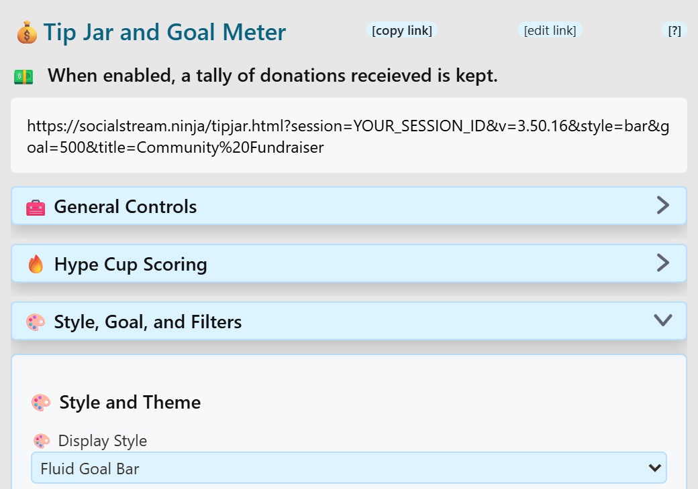

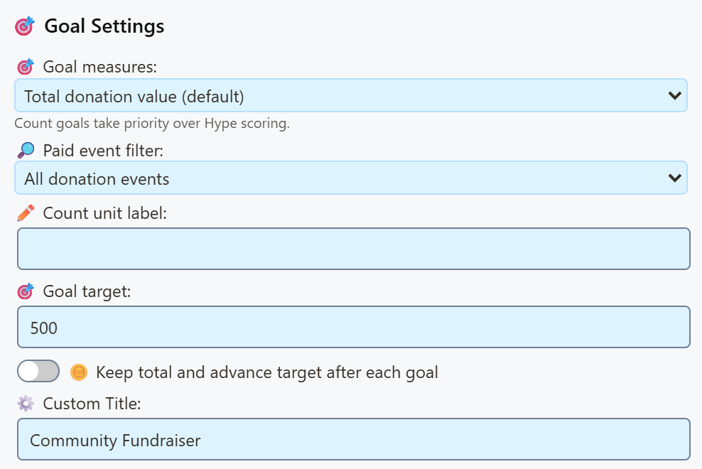
Change artwork as the goal fills
For a bar that fills with donations, choose Fluid Goal Bar or Goal Meter. The styles below include built-in animations.
To show your own GIF at 0%, 25%, 50%, 75%, and 100%, customize a copy of the overlay. There is no milestone-GIF picker in the built-in options. Keep the artwork and bar in the same custom overlay so they use the same total.
Follow the step-by-step GIF tutorial for a $500 example, artwork filenames, an AI customization prompt, and preview checks.
&jarimage=https://…. An animated GIF keeps playing, but this setting does not switch images as progress changes or add artwork beside a bar.Pick a look
Every style tracks the same goal. Only the appearance changes. Compare sample layouts in the style preview gallery. Its previews use sample data and do not change your live totals.
Bars
 Fluid Goal BarWide animated bar.
Fluid Goal BarWide animated bar.style=bar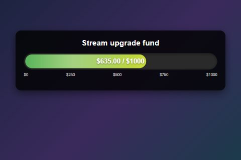
Goal MeterBar plus recent supporters.style=meter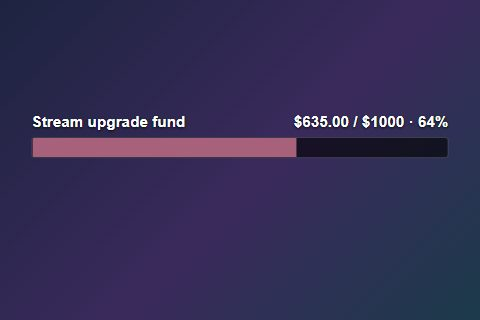
Compact BarSmall, for a corner.style=compact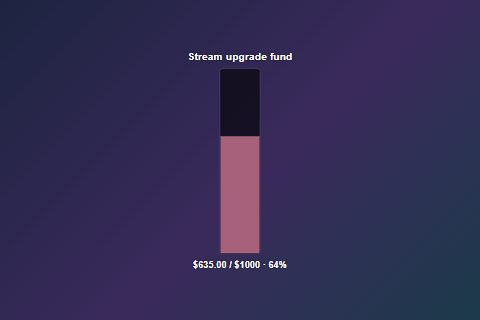
Vertical BarTall, for a side column.style=vertical Segmented BarTwenty easy-to-read blocks.
Segmented BarTwenty easy-to-read blocks.style=segmented Milestone TrackFive checkpoints light up.
Milestone TrackFive checkpoints light up.style=milestones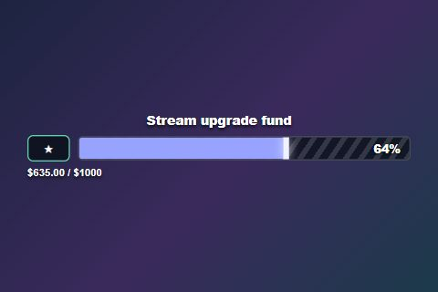
XP BarGame-style level bar.style=xpbar Health BarChunky RPG bar.
Health BarChunky RPG bar.style=healthbar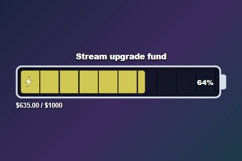
BatteryCharges red to green.style=battery Pixel BarRetro block meter.
Pixel BarRetro block meter.style=pixelbar Neon TubeGlowing, flickering tube.
Neon TubeGlowing, flickering tube.style=neonbar TerminalOld-school loading bar.
TerminalOld-school loading bar.style=terminal
Jars and objects
 Classic JarThe original, with falling items.
Classic JarThe original, with falling items.style=jar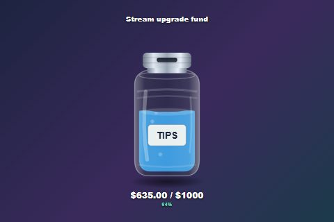
Glass Tip JarTips drop through the lid.style=glassjar 3D Rotating JarA slowly turning glass.
3D Rotating JarA slowly turning glass.style=jar3d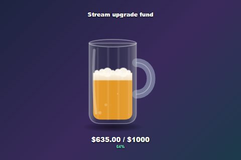
Beer MugFoam and bubbles.style=beermug Coffee MugWith drifting steam.
Coffee MugWith drifting steam.style=coffeemug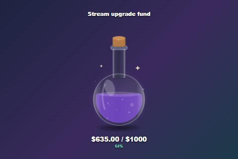
Potion FlaskGlowing and bubbling.style=potion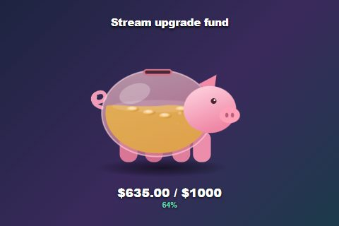
Piggy BankWobbles on each tip.style=piggybank Treasure ChestLid opens as it fills.
Treasure ChestLid opens as it fills.style=chest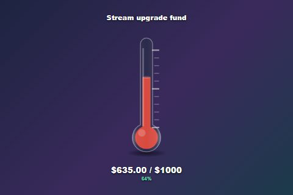
ThermometerClassic fundraiser look.style=thermometer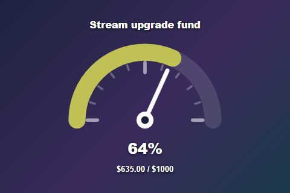
DialA sweeping needle.style=gauge
Panels and text
 Goal CardBig total, slim bar.
Goal CardBig total, slim bar.style=card Progress RingCircle with a percentage.
Progress RingCircle with a percentage.style=ring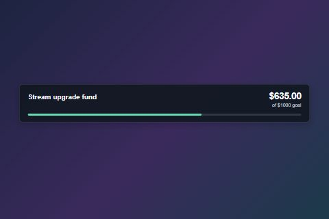
Lower ThirdLow and wide.style=lowerthird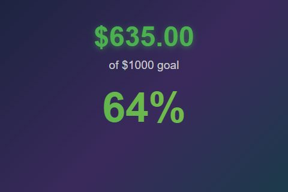
MinimalJust big numbers.style=minimal Text OnlyOne line of text.
Text OnlyOne line of text.style=text
Quick tweaks
Most of these are settings in the Tip Jar options. You can also add the code to the end of your overlay link.
| I want to… | Add to the link |
|---|---|
Hide the dollar signs (0 / 500) | &hidecurrency |
| Change what falls into the jar | &dropitem=coins · also gems, stars, bills, hearts |
| Change the celebration effect | &celebration=confetti · also hearts, fireworks, none |
| Change the Fluid Goal Bar fill colours | &fillstart=%2366d9b2&fillend=%23ffcc88 (hex colours, with %23 instead of #) |
| Set an accent on newer panels, jars, or meters | &accent=%23ffcc88. Use the fill colours above for Fluid Goal Bar. |
| Hide the title or percentage on newer jars and meters | &hidetitle · &hidepercent. These do not apply to every style; check the preview. The four panels below also support hidepercent. |
| Change the Glass Tip Jar label | &jarlabel=TIPS |
| Stop the 3D jar spinning | &nospin |
| Use my own jar picture (Classic Jar only) | &jarimage=https://… |
| Use a solid or gradient fill | &fillmode=solid · &fillmode=gradient |
| Use the newer look on older styles | &refresh |
Extra options for Goal Card, Progress Ring, Lower Third, and Segmented Bar
- Theme: Default, Neon, or Gold.
- See-through panel:
&panelopacity=0.5(0 to 1). - Bigger total:
&amountsize=32(12 to 96 pixels).
Fill colours you set yourself win over accent. Leave a box blank to keep the style's default. Bar text size and “bar only” apply to Fluid Goal Bar only.
What counts toward the goal
Pick one. Changing the look (jar, bar, etc.) never changes what counts.
Super Chats, Bits, tips, and other donations add their value.
$63.50 / $100
Every donation adds one, whatever the amount.
7 / 20 Super Chats
Donations plus subs, memberships, and gifted subs.
340 / 1000 points

Count Super Chats instead of money
- Leave Hype Cup Scoring off.
- Set Goal measures to Number of qualifying donations.
- Set Source filter to YouTube.
- Set Paid event filter to Super Chats only.
- Set the goal, for example
20.
A $1 and a $100 Super Chat each add one. To count Super Stickers too, change the paid event filter. Count unit label changes the word shown.
Count subs and memberships too
- Turn on Hype Cup Scoring.
- Leave Donation type filter on All donations.
- Set how many points each thing is worth (below).
| Setting | What it does |
|---|---|
| Sub/member points | Points for each new sub or renewal. |
| Gifted sub/member points | Points per gift. 5 gifts = 5 × this number. |
| Donation points per USD | Points for each dollar donated. |
| Point unit label | The word or symbol shown, like pts. |
How YouTube gifts are counted
| YouTube event | How it counts |
|---|---|
| Super Chat / Super Sticker | Its value for a money goal, one for a donation-count goal, or your configured donation points in Hype mode. The event must pass your filters. |
| Gifted memberships | Hype only: number of gifts × gift points. YouTube doesn't send the price, so the cash value is unknown. |
| Someone receiving a gift | Ignored by default, so gifts aren't counted twice. |
| Jewels / virtual gifts | Use the matching donation type filter. |
Only turn on Count individual gift recipients too if you want to add points on top of the gift itself.
When the goal fills up
| I want the goal to… | Use this |
|---|---|
| Stay full until I reset it | Default for money and count goals. |
| Start over after it fills | Default for Hype goals. The completion delay sets how long it stays full. |
| Keep leftover points when it starts over | Carry extra points |
| Keep counting and raise the target | Keep total and advance target |
| Go up in levels (100, 200, 300…) | Recurring goal increment |
| Remember the total after a restart | Keep amount between sessions |
Fix problems
| Problem | Try this |
|---|---|
| Nothing updates | Check the source is on, the session IDs match, and your filters allow that event. |
| Memberships or subs don't count | Turn on Hype Cup Scoring and set Donation type filter to All donations. |
| Gifted memberships add too little | They use your gift points setting, not a price. Raise the points. |
| Gifted memberships count twice | Turn off Count individual gift recipients. |
| Gifted memberships shouldn't count | Turn on Exclude YouTube gifted memberships. |
| Total drops to zero at the goal | Hype goals restart by default. Use Keep total and advance target. |
| An old total comes back | Keep amount between sessions is on. Reset the amount. |
| Super Chat count includes Super Stickers | Set Paid event filter to Super Chats only. |
The test buttons only send donations. To test memberships or gifts, watch the Dock or Events Dashboard on the same session and check the event arrives.